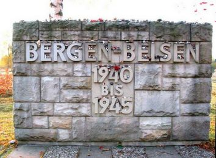
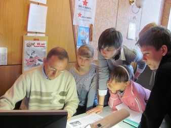

ВЕЛИКАЯ ОТЕЧЕСТВЕННАЯ… СТРАШНАЯ, ДОЛГАЯ, ТЯЖЕЛАЯ…
Горьким испытанием легла она на плечи всех, кто в ней участвовал – воевал, работал в тылу, и тех, кто ждал возвращения своих близких…. Кто-то дождался, кто-то получил похоронку, а кто-то до сих пор с надеждой хранит извещение со словами «пропал без вести», которые дарили надежду на встречу тем, кто ждал долгие годы….
Кто-то остался лежать там, где упал во время боя, кто-то попал в плен. В донесениях о безвозвратных потерях в таких случаях писали «остался в районе работ при внезапном нападении Германии на СССР» или просто «пропал без вести в районе…».
Одним из первых лагерей на территории Германии, куда свозили русских военнопленных был Берген-Бельзен. Порядки в них были воистину чудовищные: «Когда мы прошли через ворота Берген-Бельзена, мы оказались вне жизни и времени. Нам не на что было ориентироваться, не за что и не за кого было держаться»... «Тот, кто попадал сюда, попадал в хаос, в ничто». Это строки из воспоминаний бывшей узницы Берген-Бельзена Людмилы Рочковой.
После Берген-Бельзена она побывала и в других концлагерях, но такого кромешного ада, по ее словам, нигде не видела. Больше всего ей запомнился первый день после освобождения: «Перед тем нас несколько суток уже не выпускали из бараков. Не давали ни есть, ни пить. Люди умирали один за другим. Ужас, растерянность, невыносимый смрад могли без преувеличения свести с ума. Наконец двери нашего барака открылись. Какие-то люди в военной форме торопливо выталкивали нас во двор. То, что я там увидела, было еще страшнее. Штабеля трупов между бараками; трупы, доверху заполнившие канализационные ямы... Вблизи крематория выросли холмы – места поспешных захоронений».
На сегодняшний день географически места с названием Берген-Бельзен не существует. Более 70 000 умерших узников этого концлагеря покоятся на кладбище Хёрстен (Нижняя Саксония), 50000 из них – советские военнопленные, среди них есть и уроженцы Калининской области.
Александр Михайлович Терентьев, ответственный секретарь Фонда «Жить и Помнить» предложил нашему отряду поучаствовать в проекте для школ Германии «Мы пишем ваши имена», т.к. ещё много имён наших земляков, погибших в в Берген-Бельзен не установлено и не увековечено должным образом. В лучшем случае они увековечены в Книгах Памяти как без вести пропавшие, а во многих семьях их продолжают ждать или ищут место их захоронения.
Мои бойцы с готовностью приняли предложение, и принялись за работу. А работать пришлось с электронными архивами ОБД «Мемориал» и других подобных сайтов. И вот здесь начались трудности: нужны были специальные навыки для результативного поиска. Надо – значит – надо, обратились к Александру Михайловичу, чтобы научил.
В маленькой комнатке, где размещается офис Фонда «Жить и Помнить» всем не разместиться. Пришлось желающих научиться работать с архивами делить на две группы. А запланированного часа на занятие не хватало, не втиснуть человеческий фактор во временные рамки - здесь судьбы людские.
Занятия оказались не напрасными – дело пошло. Разосланы письма в районы по уже известным именам. Зверева Сабина «вытащила» около семидесяти имён, правда некоторые оказались из районов, которые уже не входят в состав Тверской области. Но мы найдём способ передать эти имена по назначению. Самый младший боец отряда Арина Ксенофонтова нашла ещё около тридцати имён. Эти имена и другие, найденные моими бойцами, мы передадим для подготовки следующего номера газеты «Жить и Помнить», разошлём в письмах главам районов для поиска родных.
Очень волнительные минуты мы переживаем, когда приходят письма из районов области, в которых сообщается, что родственники установлены. Семьдесят долгих лет они ждали весточки от своих пропавших… Уже у пятерых из 21 нашлись родные: Мамонтова Николая Николаевича, Скобелева Дмитрия Михайловича, Соловьёва Виктора Егоровича, Лебедева Алексея Егоровича, Петрова Сергея Ивановича. Есть и ещё одно имя, но адрес родственников, проживающих в Санкт-Петербурге, пока уточняется. Поиск продолжается…
И следующий этап – увековечение памяти погибших военнопленных. А вот здесь справедливый вопрос одного из моих бойцов «А дальше что? Если увековечивать в электронной Книге Памяти, то она жива, пока жив сервер…». Электронная Книга Памяти – это бесспорно очень хороший ресурс, имеющий огромный существенный «минус»: если при гибели одного бумажного экземпляра книги, можно найти другой, то при гибели сервера (не дай Бог) восстановить огромную базу данных будет проблематично и дорого. И другой аспект нельзя не учитывать: в предыдущих изданиях Книги Памяти Тверской области масса несоответствий архивным данным по таким позициям как отсутствие огромного количества имён погибших, из тех, что есть лишь малая часть записей данных достоверны. А это значит, что необходимо вносить изменения и дополнения в имеющиеся данные, плюс вновь установленные в ходе поисковых работ имена необходимо увековечивать по факту.
Нашему поколению посчастливилось жить в одно время с участниками, свидетелями той страшной войны, мы с благодарностью принимаем их славное, но тяжёлое наследие. С благодарностью, потому что этот страшный опыт не должен повторяться, а нам, нашим детям, внукам нужно сохранить память о каждом погибшем в Великой Отечественной войне, об их подвигах и страданиях, и передать этот опыт следующим поколениям.
Поиск продолжается… Впереди Вахта Памяти, и если посчастливится найти пропавших без вести, то хочется, чтоб поиск не был напрасным, чтоб имена были увековечены достойно и на века.
Н.В. Назарова,
командир поискового отряда «Поколение» |